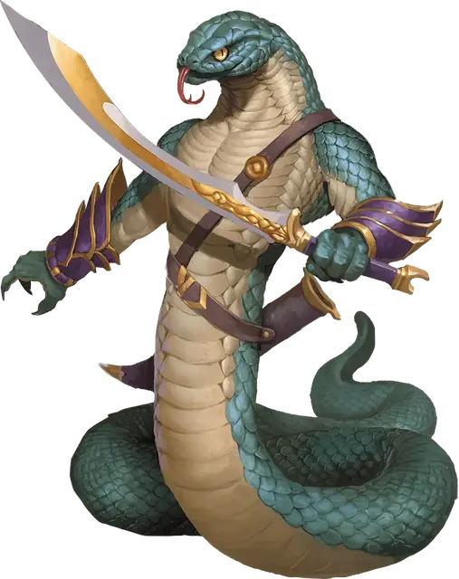

Отродье юань-ти
Yuan-ti Abomination
Большой Монстр (Перевертыш, Юань-ти), нейтрально-злой

Класс Доспеха 15 (природный доспех)
Хиты 127 (15к10 + 45)
Скорость 40 футов
| мод | спас | ||
|---|---|---|---|
| СИЛ | 19 | +4 | +4 |
| ЛОВ | 16 | +3 | +3 |
| ТЕЛ | 17 | +3 | +3 |
| мод | спас | ||
|---|---|---|---|
| ИНТ | 17 | +3 | +3 |
| МДР | 15 | +2 | +2 |
| ХАР | 18 | +4 | +4 |
Навыки Восприятие +5, Скрытность +6
Иммунитет к урону яд
Иммунитет к состояниям отравление
Чувства тёмное зрение 60 футов, пассивное Восприятие 15
Языки Общий, Бездны, Драконий
Опасность 7 (2900 опыта)
Бонус мастерства +3
Среда обитания Болото, Лес, Пустыня
Особенности
Перевертыш. Юань-ти может действием превратиться в Большую змею или принять свой истинный облик. Во всех обликах его характеристики остаются теми же самыми. Все несомое и носимое им снаряжение не превращается. Он не меняет облик, если умирает.
Врождённое колдовство (только в облике отродья). Базовой характеристикой юань-ти является Харизма (Сл спасброска от заклинания 15). Он может накладывать следующие заклинания, не нуждаясь в материальных компонентах:
• Неограниченно:дружба с животными [animal friendship] (только змеи);
• 3/день: внушение [suggestion];
• 1/день:ужас [fear].
Сопротивление магии. Юань-ти совершает с преимуществом спасброски от заклинаний и прочих магических эффектов.
Черты. Вы можете изменять юань–ти, давая им одну или больше нижеследующих черт.
Вариант: Кислотная слизь. Бонусным действием юань–ти может покрыть свое тело кислотной слизью, которая держится 1 минуту. Существо, которое касается юань–ти, попадает по нему рукопашной атакой находясь в пределах 5 футов от него, или получает попадание атакой удушением, получает 5 (1к10) кислотного урона.
Вариант: Шкура хамелеона
Юань–ти обладает преимуществом на проверки Ловкости (Скрытность), делаемые, чтобы спрятаться.
Вариант:Сбрасываемая кожа (1/день). Этот юань–ти может сбрасывать свою кожу за бонусное действие, чтоб освободить себя от захвата, кандалов, или другого типа опутывания. Если юань–ти тратит 1 минуту на поедание своей сброшенной кожи, он восстанавливает количество хитов, равное половине его максимальных хитов.
Вариантные действия. Нижеследующие действия разрешены только для определенных видов юань–ти.
Вариант: Превращение в змея (Перезарядка 6). Юань–ти нацеливается на существо, которое может видеть на расстоянии не далее 60 фт. Цель должна выполнить спасбросок Мудрости или будет превращена в Крошечную ядовитую змею, как будто под действием заклинания превращение [polymorph]. Сл спасброска такая же, как у способности Врожденное колдовство юань–ти.
Вариант: Отвращение к змеям (Перезарядка 6). Юань–ти нацеливается на существо, которое может видеть на расстоянии не более 60 фт. от себя. Цель должна выполнить спасбросок Мудрости или будет чувствовать интенсивное желание избежать змей и змееподобных существ (включая юань–ти), как будто под действием заклинания
антипатия/симпатия [antipathy/sympathy]. Сл спасброска такая же, как у способности Врожденное колдовство юань–ти.
Вариант: Палки в змей (Перезарядка 6). Юань–ти превращает кучку хвороста, стрел, или похожих по размерам деревянных предметов в рой ядовитых змей [swarm of poisonous snakes]. Клубок действует как союзник юань–ти и подчиняется его голосовым командам. Клубок существует 1 минуту, после чего превращается в исходные материалы.
Действия
Мультиатака (только в облике отродья). Юань-ти совершает две дальнобойные атаки или три рукопашные атаки, но Укус и Сжимание может использовать только по одному разу.
Укус. Рукопашная атака оружием: +7 к попаданию, досягаемость 5 футов, одно существо. Попадание: Колющий урон 7 (1к6 + 4) плюс урон ядом 10 (3к6).
Сжимание. Рукопашная атака оружием: +7 к попаданию, досягаемость 10 футов, одна цель Попадание: Дробящий урон 11 (2к6 + 4), и цель становится схваченной (Сл высвобождения 14). Пока цель схвачена, она опутана, и юань-ти не может сжимать другую цель.
Скимитар (только в облике отродья). Рукопашная атака оружием: +7 к попаданию, досягаемость 5 футов, одна цель. Попадание: Рубящий урон 11 (2к6 + 4).
Длинный лук (только в облике отродья). Дальнобойная атака оружием: +6 к попаданию, дистанция 150/600 футов, одна цель. Попадание: Колющий урон 12 (2к8 + 3) плюс урон ядом 10 (3к6).
Описание
Отродья юань-ти — чудовищные змеи с крепкими гуманоидными торсами и руками. Отродья формируют наивысшую касту в обществе юань-ти, и они ближе остальных приблизились к расе, которую змеиные боги уготовали им. Они руководят подготовкой планов и выполнением темных обрядов в надежде однажды стать правителями мира.
См. дополнительно статью: "Бестиарий: Юань-ти"